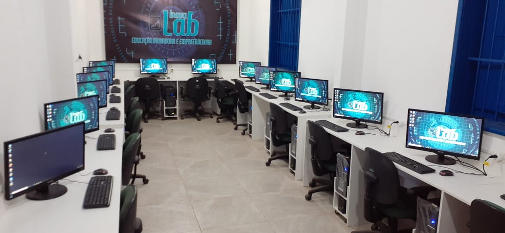

LABORATÓRIO DE DESENVOLVIMENTO
Pensando nesses benefícios, falamos um pouco sobre a importância de garantir a qualidade dos exames laboratoriais, bem como dos problemas gerados quando ela não é assegurada. Por fim, separamos 6 dicas essenciais para que o gestor consiga entregar exames precisos para seus clientes. Confira!
Soluções em gestão laboratorial.

O computador e a internet já são uma realidade nas escolas. Pesquisa encomendada pela Fundação Victor Civita (FVC) ao Ibope mostra que a falta de recursos não é mais obstáculo para a maioria das instituições. O levantamento, feito em 400 escolas públicas de 13 capitais, mostrou que 98% têm computador, e 83%, acesso à internet. De cada quatro instituições, três possuem laboratório de informática. O desafio agora é mantê-lo aberto e estimular professores e alunos a usar o espaço.